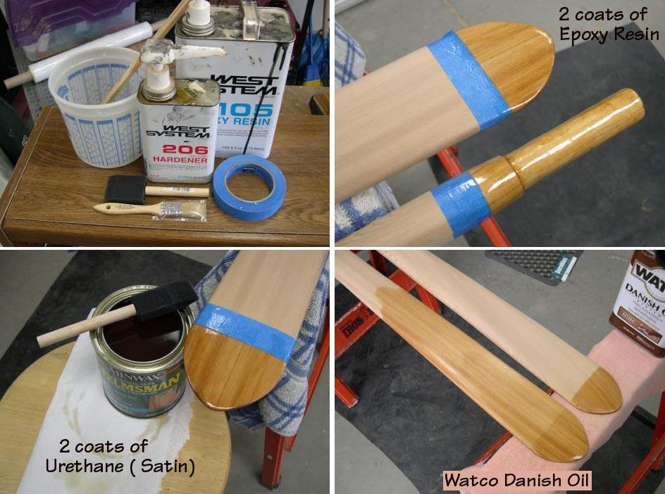

| Take-Apart Paddle Construction | Menu Previous Page Next Page |
|
 Unlike the finish on the Greenland paddle, this modified AP has an epoxy coating on the tips and the Ferrule inserts to provide additional surface strength. The epoxy extends up the loom an additional inch to provide a better contact surface than Watco oil for the tape used to hold the ferrule in place. Apply two coats of epoxy, and when cured, wet sand with synthetic steel wool to dull the surface and to remove any amine blush (film) that has formed on the surface. Apply 2 coats of UV urethane (satin) to the tips and 1" loom area to match the non-glossy Watco Danish Oil finish on the rest of the paddle. Urethane is not required at the ferrule inserts. |
|